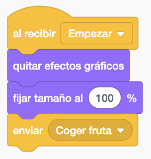
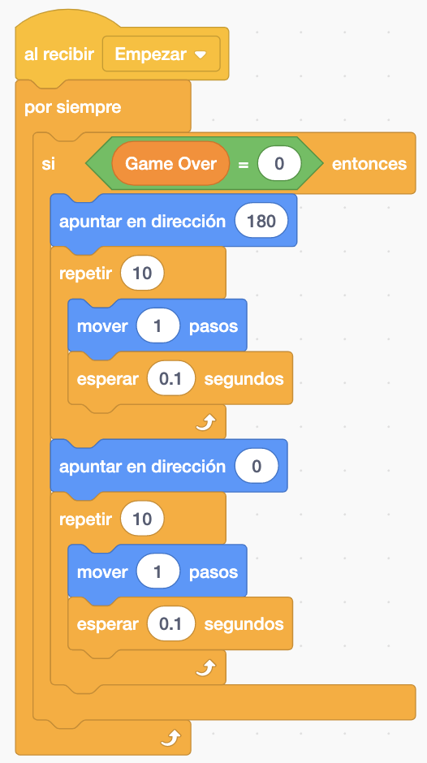
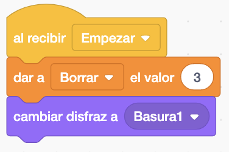
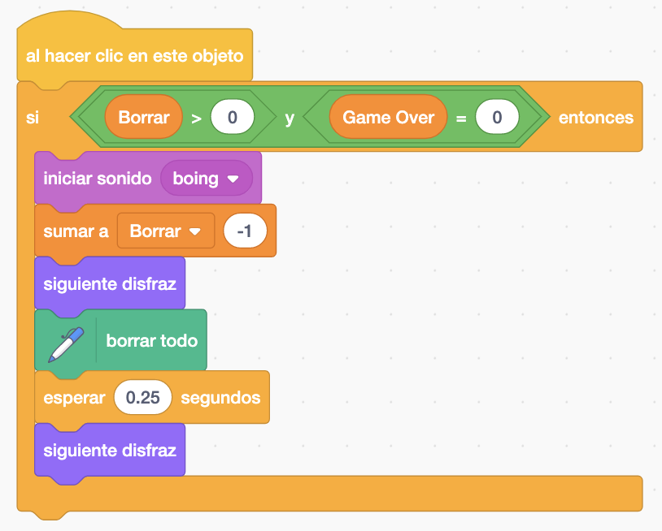
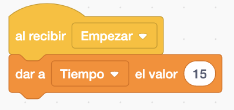
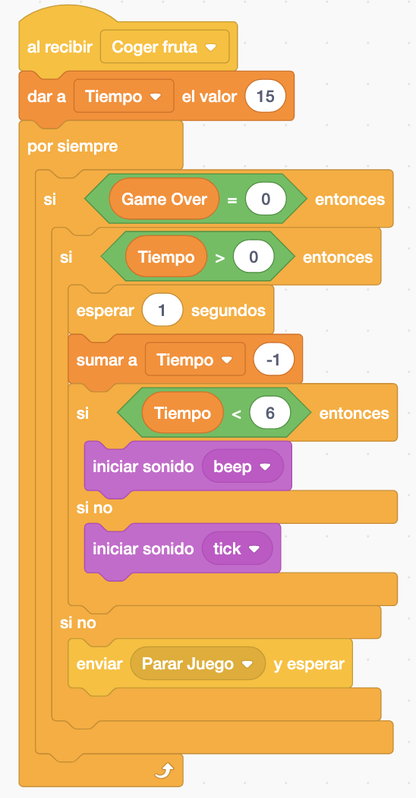

Mariquita, Fruta, Basura, Reloj y Frutas.
Necesitamos dos, el escenario click y escenario juego.
El juego consiste en que la mariquita tiene que coger las frutas que apareceran aleatoriamente en el escenario. Acumulando puntos y tendrá un tiempo determinado para poder recoger la fruta.
Pondremos el escenario click y la mariquita en el centro. en el lateral del escenario tendremos que poner los siguientes sprites: Frutas, Basura y Reloj. Cada uno tendrá su variable de: Puntos, Borrar y Tiempo.

Nada más darle a la bandera verde inicializaremos las variables y cambiamos al escenario click. Tenemos otra variable "Game Over" la inicializamos a 1 (el juego no funciona). Hacemos un "enviar jugar" para inicializar el juego para quitar efectos gráficos, borrar las lineas si se ha jugado antes, esconder objetos...

Al hacer el click en el escenario y si la variable "Game Over" es 1 la pondremos a 0 para que no se pueda volver dar click al escenario. "enviar Empezar" y cambiamos al "Escenario Juego".

La mariquita como siempre la colocamos en el centro del plato y mirando hacia arriba.

Antes de empezar a mover a la mariquita necesitamos saber si estamos jugando o no. Para ello tenemos la variable "Game Over" y si está a 0 me dejara mover la mariquita.

El movimiento de la mariquita con las flechas la meteremos dentro del "Game Over" si es igual a 0.
La mariquita se movera dentro de unos rangos. Ya que en la parte de la izquierda tenemos la sección de puntos, basura y tiempo y no podrá acceder a esa parte. Lo haremos comprobando continuamente su "posición en x" ó "posición en y". Y cuando estemos en ese rango le dejaremos que el jugador pueda dar a la tecla correspondiente.
La flecha derecha se podrá pulsar siempre que la "posición en x" de la mariquita sea menor de 230. Apuntara hacia la derecha, movera pasos y cambiara de disfraz.

La flecha izquierda se podrá pulsar siempre que la "posición en x" de la mariquita sea mayor de -160. Apuntara hacia la izquierda, movera pasos y cambiara de disfraz.

La flecha arriba se podrá pulsar siempre que la "posición en y" de la mariquita sea menor de 170. Apuntara hacia la arriba, movera pasos y cambiara de disfraz.

La flecha abajo se podrá pulsar siempre que la "posición en y" de la mariquita sea mayor de -170. Apuntara hacia abajo, movera pasos y cambiara de disfraz.

La mariquita tendrá "recibir jugar" donde pondremos que dibuje una linea de color azul y tendrá un tamaño de lapiz para poder dibujar la linea que aparece en el juego.

Si el color de la cabeza de color gris toca el color azul de la línea "enviar Parar Juego" haremos un efecto "Ghost".

Y si toca una fruta sumara puntos, sonora un sonido y haremos un "enviar fruta" que ira a la fruta y hara ciertas cosas que veremos más adelante.

Comenzaremos con la fruta. Tenemos en "al recibir Coger fruta" posicionamos la frura con un número aleatorio tanto en "X" como en "Y". Y cambiariamos el disfraz también aleatoriamente.

En la Fruta tendremos también un "al recibir Empezar" para llamar de nuevo al "enviar Coger fruta"

También haremos que la fruta se mueva un poco hacia arriba y hacia abajo.

Y pondremos el mismo bloque de "al recibir Parar juego" que tiene la mariquita para que haga el efecto.
Comenzamos con la Basura. Al empezar la inicializamos a 3 y le ponemos el disfraz.

Y cuando hacemos un click en la Basura cambiaremos su disfraz, haremos un sonido, borraremos las lineas dibujadas y quitaremos a su contador 1.

Solo nos faltaria poner el reloj. que Empezara con 15 segundos para poder coger la frua.

Cuando el tiempo sea mayor que 5 sonara un sonido pero cuando sea menor que 5 sonara otro sonido. Y cuando el Tiempo sea 0 el juego se parara.

Faltaria poner el Sprite Fruta que solo se mostrara para que debajo aparezcan los Puntos..
Y el juego quedaría así.

Para descargarte el juego terminado pulsa aquí.